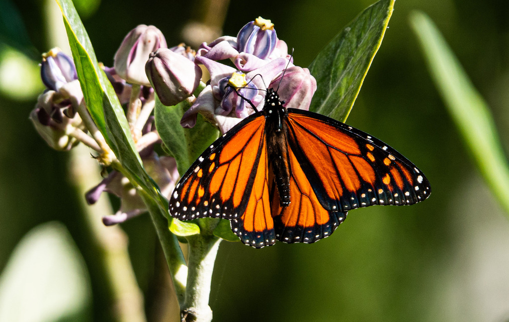

- The monarch is a familiar sight in Florida's open spaces and gardens — bright orange wings laced with heavy black veins.
- Its caterpillars eat only milkweed, a plant whose toxins they store in their bodies, making both caterpillar and adult unpalatable, even poisonous, to predators.
- Each fall, monarchs from the eastern U.S. and Canada fly thousands of miles to spend the winter in the mountains of central Mexico.
- No single butterfly makes the whole round trip — the journey is a relay across several generations, with one long-lived late-summer generation doing the marathon south.
Bright orange with heavy black veins and a black border dotted with white spots.
Males have a small black scent spot on a hindwing vein and slightly thinner veins; females have thicker veins and no spot.
Boldly banded in yellow, black, and white, found on milkweed.
The viceroy butterfly mimics the monarch but is smaller and has an extra black line across the hindwing.
Silent. Like other butterflies, monarchs make no calls.
A large orange-and-black butterfly nectaring on flowers or drifting through the garden. To be sure it is a monarch and not a viceroy, check the hindwing — a viceroy has a curved black line crossing it that the monarch lacks.
Caterpillars eat only milkweed leaves. Adults sip nectar from a wide range of flowers and also take water and minerals from damp soil.
Around the flower beds and any milkweed plantings, especially on warm, sunny days. Check nectar-rich blooms for feeding adults and milkweed leaves for caterpillars.
Present much of the year in Florida, with both migratory and resident breeding monarchs. Most numerous during spring and fall movements and in warm, flowery months.
Just watch and enjoy. Avoid handling butterflies, whose wings are delicate, and the best help you can offer is planting native milkweed and nectar flowers.


- © Rob Carr (CC-BY-NC), via iNaturalist
- © catalaniclaire (CC-BY-NC), via iNaturalist
- © jsea (CC-BY-NC), via iNaturalist